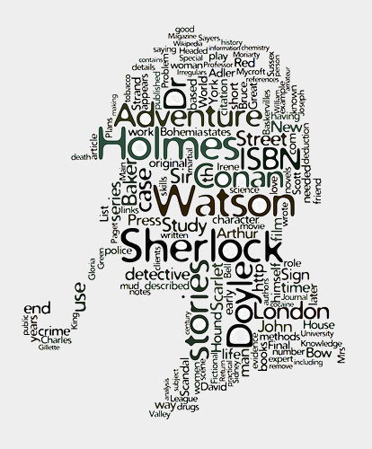

A partir da análise de 641 obras literárias de 56 autores conseguimos identificar seus traços emocionais únicos
| Atributos do Emolex | ||
|---|---|---|
| Atributo | Exemplos | Qnt (14182 palavras) |
| Positive | abundance,shine, love | 2312 |
| Negative | abadon,death,nausea,hate | 3324 |
| Anger | doomsday,rage,savage | 1247 |
| Anticipation | inquiry,prognostic,prophecy | 839 |
| Disgust | prostitute,cholera,crap | 1058 |
| Fear | wilderness,threat,terrorism | 1476 |
| Joy | elegant,bless,amused | 689 |
| Sadness | punish,prison,fat | 1191 |
| Surprise | rarity,playful,mystery | 534 |
| Trust | radiance,proven,philosopher | 1231 |
| Atributos do LIWC 2015 | ||
| Atributo | Exemplos | Qnt (6548 palavras) |
| Affective | processes affect happy, cried | 1393 |
| Positive | emotion posemo love, nice, sweet | 620 |
| Negative | emotion negemo hurt, ugly, nasty | 744 |
| Anxiety | anx worried, fearful | 116 |
| Anger | anger hate, kill, annoyed | 230 |
| Sadness | sad crying, grief, sad | 136 |
| Social | processes social mate, talk, they | 756 |
| Family | family daughter, dad, aunt | 118 |
| Friends | friend buddy, neighbor | 95 |
| Female | references female girl, her, mom | 124 |
| Male | references male boy, his, dad | 116 |
| Cognitive | processes cogproc cause, know, ought | 797 |
| Insight | insight think, know | 259 |
| Causation | cause because, effect | 135 |
| Discrepancy | discrep should, would | 83 |
| Tentative | tentat maybe, perhaps | 178 |
| Certainty | certain always, never | 113 |
| Differentiation | differ hasn’t, but, else | 81 |
| Perceptual | processes percept look, heard, feeling | 436 |
| See | see view, saw, seen | 126 |
| Hear | hear listen, hearing | 93 |
| Feel | feel feels, touch | 128 |
| Biological | processes bio eat, blood, pain | 748 |
| Body | body cheek, hands, spit | 215 |
| Health | health clinic, flu, pill | 294 |
| Sexual | sexual horny, love, incest | 131 |
| Ingestion | ingest dish, eat, pizza | 184 |
| Drives | drives | 1103 |
| Affiliation | affiliation ally, friend, social | 248 |
| Achievement | achieve win, success, better | 213 |
| Power | power superior, bully | 518 |
| Reward | reward take, prize, benefit | 120 |
| Risk | risk danger, doubt | 103 |
| Past | focus focuspast ago, did, talked | 341 |
| Present | focus focuspresent today, is, now | 424 |
| Future | focus focusfuture may, will, soon | 97 |
| Relativity | relativ area, bend, exit | 974 |
| Motion | motion arrive, car, go | 325 |
| Space | space down, in, thin | 360 |
| Time | time end, until, season | 310 |
| Work | work job, majors, xerox | 444 |
| Leisure | leisure cook, chat, movie | 296 |
| Home | home kitchen, landlord | 100 |
| Money | money audit, cash, owe | 226 |
| Religion | relig altar, church | 174 |
| Death | death bury, coffin, kill | 74 |
| Informal | language informal | 380 |
| Swear | words swear fuck, damn, shit | 131 |
| Netspeak | netspeak btw, lol, thx | 209 |
| Assent | assent agree, OK, yes | 36 |
| Nonfluencies | nonflu er, hm, umm | 19 |
| Fillers | filler Imean, youknow | 14 |